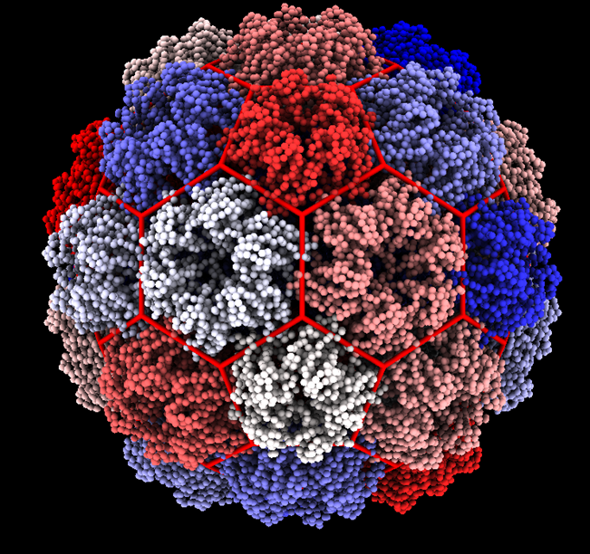

Home (TESTING) TEstin 2.0
My name is Colin Brown, an MS student in Physics at San Diego State University. This page contains a record of my contributions to Luque Lab and the ongoing development of my Master’s Thesis. I primarily analyze the structural and geometric properties of viral capsids with coarse grained physical models.
Ongoing Projects
Classifying Viral Capsids via Quasi-Rigid Domain Decomposition

I am developing a tool based on the work in Ponzoni & Polles 2015 that uses Normal Mode Analysis and Elastic Network Models to decompose a protein structure into its quasi-rigid subunits. I am applying this tool to capsids and using the results to assist in the classification of capsids using the scheme described in Twarock & Luque(2019). The details of this method are included in Chapter 4 of my thesis and the project is located in a Github Repository.
Catalogue Of Capsid Classifications

I am part of a group effort in Luque Lab to create a catalogue of classifications of Viral Capsids based on their geometry. This project is ongoing at this Github Repository.
Completed Projects
ChimeraX hkcage

I developed a tool for the free molecular visualization software ChimeraX. The tool was an extension of the ‘hkcage’ tool already present in ChimeraX to generate Geodesic & Goldberg Polyhedra to a set of new geometries described in Twarock & Luque(2019). This tool is now part of the official ChimeraX Toolshed. (ChimeraX Documentation.) The tool is also being developed and documented in a Github Repository.
Coarse Grained Models Of Viral Capsids

I created coarse grained toy models of capsids based on those used in Zandi & Reguera 2004 for the purpose of comparing standard hexagonal capsid structures with trihexagonal capsid structures.
##